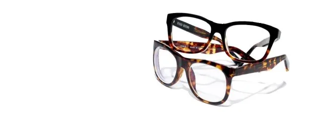

Modern eyewear serves a dual purpose. In addition to being a vision-correcting medical device used to enhance your safety and quality of life, eyeglasses have become a major fashion accessory. Therefore, when it comes to selecting eyeglasses there are many important factors to consider.The Frame
Frames are made from a large variety of materials ranging from acetates and hard plastics to metals and metal alloys. The quality of frame materials is very high nowadays with many cutting-edge manufacturers investing heavily in developing new innovations and materials to make stronger, more flexible, lighter, and more beautiful frames.
In considering the optimal material for your eyeglass frame, your lifestyle plays a big role. Children and those with active lifestyles require durable and flexible frames that are resistant to breaks from hits and falls. Those who have skin allergies need to seek out frames made from hypoallergenic materials such as acetate, titanium, or stainless steel. Other characteristics of frame materials to consider are the weight or flexibility of the material as well as the price. Many designers also use wood, bone, or precious metals to adorn frames and to add an extra flare.
Hinges and nosepads also play an important role in the durability and comfort of your frames. Children, in particular, can benefit from spring hinges and nosepads which can keep the frames from slipping off. Rimless or semi-rimless glasses are also an option for those that durability is not a primary concern.
Frame size is a very important factor in frame selection. Frames should fit well and not slip off the nose or be too tight and press against the temples or the sides of the nose.
More and more top fashion design brands are coming out with designer eyewear collections to suit every taste and style. Frames come in all colors, sizes, and shapes so the choices are endless in finding a frame that suits your personal style and looks good with your face shape and coloring.
Lenses
Even though people spend much more time focusing on frame selection, as a medical device, the lenses of your eyeglasses are the most important part. It is therefore very important that you obtain your lenses (and therefore your glasses) from a reputable source. It is always best to buy eyeglasses through an eye doctor who is able to check that the lenses are made and fitted properly to ensure your best possible vision.
There are a number of variables to consider in selecting lenses.
If you have a high prescription which may require thicker lenses, you may want to ask for aspheric lenses that are thinner than normal lenses.
There are lenses that are made from materials that are more durable and shatter-resistant such as polycarbonate or trivex, which can be useful for children or sports eyewear.
Photochromic lenses can serve as eyeglasses and sunglasses as the lenses darken when exposed to the sunlight to block out the sunlight and UV rays.
Polarized lenses create greater eye comfort by reducing glare specifically from the water or snow and are great for sunglasses for those that spend time outdoors.
There are also a number of coating options that you can add to lenses to enhance certain characteristics such as anti-reflective coatings, anti-scratch coatings, or UV coatings to reduce exposure from the sun. Adding a coating may require special cleaning or treatment so ask your eye doctor or optician about special instructions.
Eyeglasses Over 40
Once you approach age 40 you are likely to begin to experience presbyopia which is the loss of the ability to focus on close objects. This happens as the eye begins to age and can easily be corrected with reading glasses. However, if you already have an eyeglass prescription for distance vision, you will need a solution that enables you to see your best both near and far.
There are a number of options available for presbyopes including bifocals, multifocal, and progressive lenses with new technology improving the options all the time. You should speak to the optician regarding the best solution for your individual needs.
Whether they are for a child’s first pair, a second pair of designer frames or a senior with a complicated prescription, you should always consult with your Spring eye doctor for a new pair of glasses. Ultimately, your eyeglasses have a job and that it to help you to see your best to get the most out of every day.